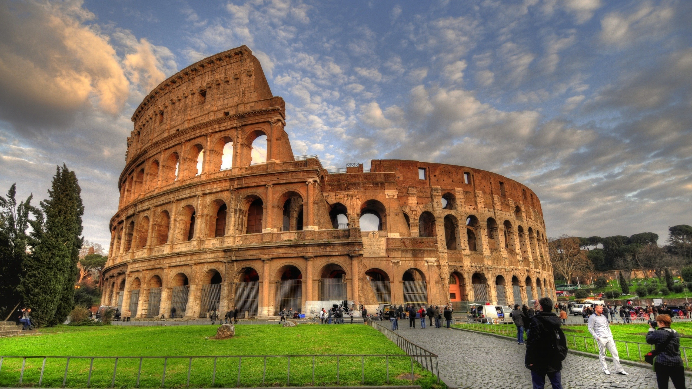

ROMAN COLOSSEUM ROME

Construction, inauguration, and Roman renovations
Colosseum
Sestertius of Titus celebrating the inauguration of the Colosseum (minted 80 AD).
A map of central Rome during the Roman Empire, with the Colosseum at the upper right cornerThe site chosen was a flat area on the floor of a low valley between the Caelian, Esquiline and Palatine Hills, through which a canalised stream ran. By the 2nd century BC the area was densely inhabited. It was devastated by the Great Fire of Rome in AD 64, following which Nero seized much of the area to add to his personal domain. He built the grandiose Domus Aurea on the site, in front of which he created an artificial lake surrounded by pavilions, gardens and porticoes. The existing Aqua Claudia aqueduct was extended to supply water to the area and the gigantic bronze Colossus of Nero was set up nearby at the entrance to the Domus Aurea.[15]
Cross-section from the Lexikon der gesamten Technik (1904)Although the Colossus was preserved, much of the Domus Aurea was torn down. The lake was filled in and the land reused as the location for the new Flavian Amphitheatre. Gladiatorial schools and other support buildings were constructed nearby within the former grounds of the Domus Aurea. Vespasian's decision to build the Colosseum on the site of Nero's lake can be seen as a populist gesture of returning to the people an area of the city which Nero had appropriated for his own use. In contrast to many other amphitheatres, which were located on the outskirts of a city, the Colosseum was constructed in the city centre; in effect, placing it both symbolically and precisely at the heart of Rome.
Construction was funded by the opulent spoils taken from the Jewish Temple after the Great Jewish Revolt in 70 AD led to the Siege of Jerusalem. According to a reconstructed inscription found on the site, "the emperor Vespasian ordered this new amphitheatre to be erected from his general's share of the booty." Along with the spoils, estimated 100,000 Jewish prisoners were brought back to Rome after the war, and many contributed to the massive workforce needed for construction. The slaves undertook manual labor such as working in the quarries at Tivoli where the travertine was quarried, along with lifting and transporting the quarried stones 20 miles from Tivoli to Rome.[16] Along with this free source of unskilled labor, teams of professional Roman builders, engineers, artists, painters and decorators undertook the more specialized tasks necessary for building the Colosseum.
Construction of the Colosseum began under the rule of Vespasian[4] in around 70–72 AD (73-75 AD according to some sources)[16] The Colosseum had been completed up to the third story by the time of Vespasian's death in 79. The top level was finished by his son, Titus, in 80,[4] and the inaugural games were held in A.D. 80 or 81.[16] Dio Cassius recounts that over 9,000 wild animals were killed during the inaugural games of the amphitheatre. Commemorative coinage was issued celebrating the inauguration.[17] The building was remodelled further under Vespasian's younger son, the newly designated Emperor Domitian, who constructed the hypogeum, a series of underground tunnels used to house animals and slaves. He also added a gallery to the top of the Colosseum to increase its seating capacity.[18]
In 217, the Colosseum was badly damaged by a major fire (caused by lightning, according to Dio Cassius[19]) which destroyed the wooden upper levels of the amphitheatre's interior. It was not fully repaired until about 240 and underwent further repairs in 250 or 252 and again in 320. Gladiatorial fights are last mentioned around 435. An inscription records the restoration of various parts of the Colosseum under Theodosius II and Valentinian III (reigned 425–455), possibly to repair damage caused by a major earthquake in 443; more work followed in 484[20] and 508. The arena continued to be used for contests well into the 6th century. Animal hunts continued until at least 523, when Anicius Maximus celebrated his consulship with some venationes, criticised by King Theodoric the Great for their high cost.[15]
Medieval
Map of medieval Rome depicting the ColosseumThe Colosseum underwent several radical changes of use during the medieval period. By the late 6th century a small chapel had been built into the structure of the amphitheater, though this apparently did not confer any particular religious significance on the building as a whole. The arena was converted into a cemetery. The numerous vaulted spaces in the arcades under the seating were converted into housing and workshops, and are recorded as still being rented out as late as the 12th century. Around 1200 the Frangipani family took over the Colosseum and fortified it, apparently using it as a castle.
Severe damage was inflicted on the Colosseum by the great earthquake in 1349, causing the outer south side, lying on a less stable alluvial terrain, to collapse. Much of the tumbled stone was reused to build palaces, churches, hospitals and other buildings elsewhere in Rome. A religious order moved into the northern third of the Colosseum in the mid-14th century and continued to inhabit it until as late as the early 19th century[citation needed]. The interior of the amphitheater was extensively stripped of stone, which was reused elsewhere, or (in the case of the marble façade) was burned to make quicklime.[15] The bronze clamps which held the stonework together were pried or hacked out of the walls, leaving numerous pockmarks which still scar the building today.
Modern
The Colosseum in a 1757 engraving by Giovanni Battista PiranesiDuring the 16th and 17th century, Church officials sought a productive role for the Colosseum. Pope Sixtus V (1585–1590) planned to turn the building into a wool factory to provide employment for Rome's prostitutes, though this proposal fell through with his premature death.[21] In 1671 Cardinal Altieri authorized its use for bullfights; a public outcry caused the idea to be hastily abandoned.
Allied troops consult a guidebook outside the Colosseum after liberation in 1944In 1749, Pope Benedict XIV endorsed the view that the Colosseum was a sacred site where early Christians had been martyred. He forbade the use of the Colosseum as a quarry and consecrated the building to the Passion of Christ and installed Stations of the Cross, declaring it sanctified by the blood of the Christian martyrs who perished there (see Significance in Christianity). However, there is no historical evidence to support Benedict's claim, nor is there even any evidence that anyone prior to the 16th century suggested this might be the case; the Catholic Encyclopedia concludes that there are no historical grounds for the supposition, other than the reasonably plausible conjecture that some of the many martyrs may well have been.[22]
Interior of the Colosseum, Rome (1832) by Thomas Cole, showing the Stations of the Cross around the arena and the extensive vegetationLater popes initiated various stabilization and restoration projects, removing the extensive vegetation which had overgrown the structure and threatened to damage it further. The façade was reinforced with triangular brick wedges in 1807 and 1827, and the interior was repaired in 1831, 1846 and in the 1930s. The arena substructure was partly excavated in 1810–1814 and 1874 and was fully exposed under Benito Mussolini in the 1930s.[15]
The Colosseum is today one of Rome's most popular tourist attractions, receiving millions of visitors annually. The effects of pollution and general deterioration over time prompted a major restoration programme carried out between 1993 and 2000, at a cost of 40 billion Italian lire ($19.3m / €20.6m at 2000 prices).
In recent years the Colosseum has become a symbol of the international campaign against capital punishment, which was abolished in Italy in 1948. Several anti–death penalty demonstrations took place in front of the Colosseum in 2000. Since that time, as a gesture against the death penalty, the local authorities of Rome change the color of the Colosseum's night time illumination from white to gold whenever a person condemned to the death penalty anywhere in the world gets their sentence commuted or is released,[23] or if a jurisdiction abolishes the death penalty. Most recently, the Colosseum was illuminated in gold in November 2012 following the abolishment of capital punishment in the American state of Connecticut in April 2012.[24]
Because of the ruined state of the interior, it is impractical to use the Colosseum to host large events; only a few hundred spectators can be accommodated in temporary seating. However, much larger concerts have been held just outside, using the Colosseum as a backdrop. Performers who have played at the Colosseum in recent years have included Ray Charles (May 2002),[25] Paul McCartney (May 2003),[26] Elton John (September 2005),[27] and Billy Joel (July 2006).
The Colosseum today as a background to the busy metropolisPhysical description